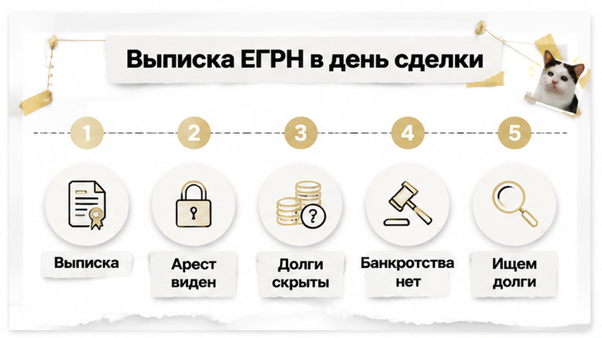
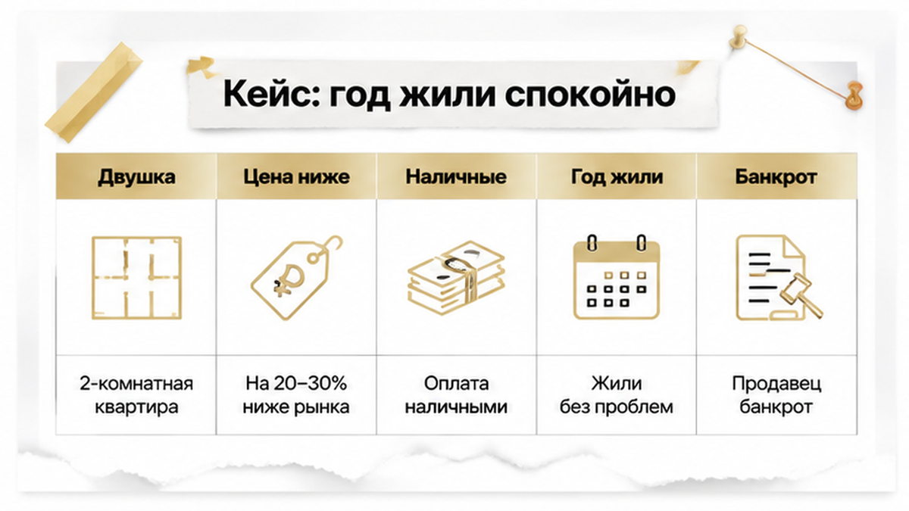
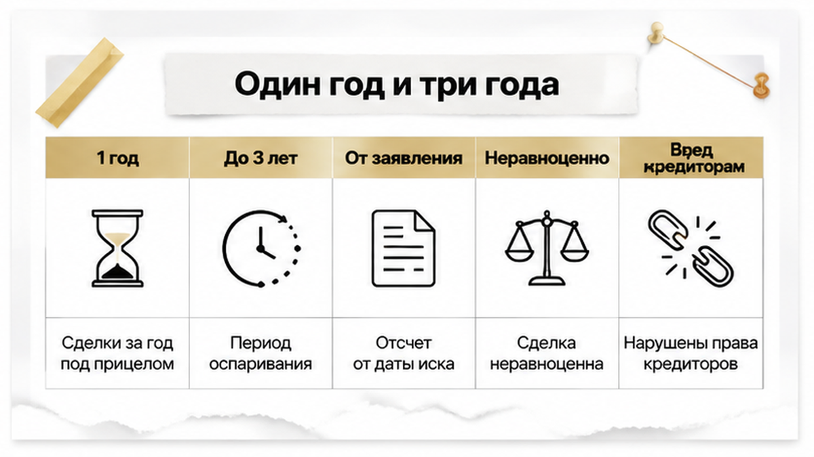
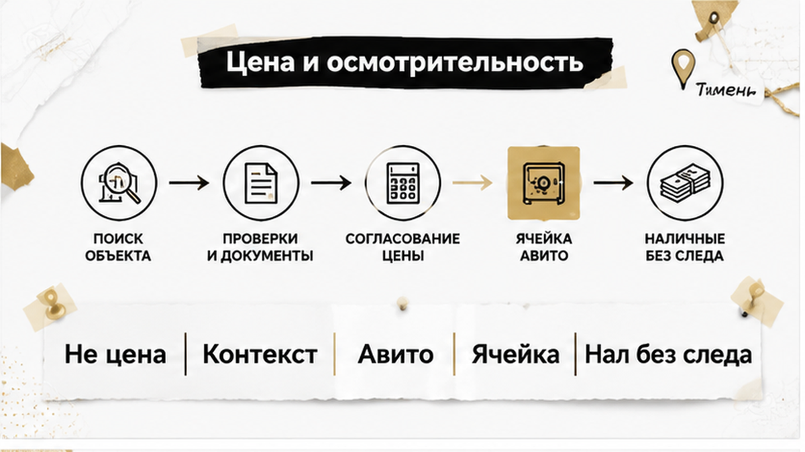
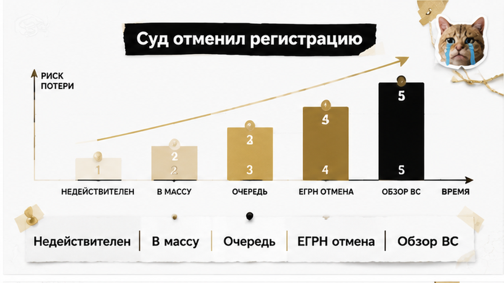
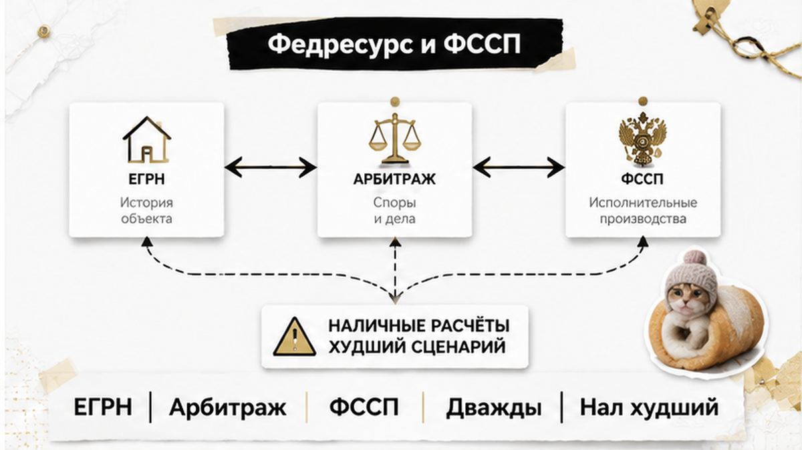

Квартиру купили, право зарегистрировали, ключи забрали, обои переклеили — а через год в ящике повестка в арбитражный суд. Продавец, который на сделке выглядел обычным человеком с чистой выпиской, через пару месяцев после расчёта подал на собственное банкротство. Финансовый управляющий поднял все прежние сделки должника, и двушка, где уже год живёт другая семья, превратилась в «подозрительную сделку по выводу ликвидного актива». Покупатель до последнего повторял одно: «Сделка закрыта, запись внесена, спорить не о чем». Запись действительно внесена — вот только запись в ЕГРН не финал, а текущее состояние реестра, и обзор Верховного Суда прямо называет реституцию основанием её отменить. Дальше — как эта отмена выглядит в живых деньгах.
Я — Святослав Шакин, The Риэлтор в Тюмени. Лично веду сделку от звонка до регистрации.
Полный разбор кейсов и как я это ловлю до аванса — в Telegram и MAX. Напишите — подключусь.

Выписка отвечает на один вопрос: кто владеет объектом, на каком основании, какие права и обременения зарегистрированы на эту дату. Арест виден. Ипотека видна. Запрет на регистрационные действия виден. Отметка о судебном споре, если её внесли, тоже видна.
Чего в выписке нет и быть не может: будущего заявления о банкротстве продавца, его долгов перед банками и физлицами, поручительств, неисполненных решений судов и намерения кредитора через месяц пойти в арбитраж. На дату сделки продавец банкротом не является — значит, и записи никакой. Процедура запускается позже. А смотреть назад она умеет.
Обычный человек видит чистую выписку и слышит «всё чисто». Риэлтор смотрит на ту же бумагу и спрашивает: «А долги у продавца какие? Кто с ним судится? Откуда спешка?»
«Выписку взяли в день подписания» закрывает один класс рисков — уже существующие обременения. И вообще не закрывает другой — оспаривание сделки по Закону о банкротстве. Механики разные, путать их дорого. Ровно так же покупатели путают одобренную ипотеку с гарантией регистрации — про это отдельный случай, где ипотеку одобрили, а регистрацию отменили. И так же выписка молчит о людях, которые могут заявить права на квартиру, — как в истории с наследством, где сын от первого брака от доли не отказался.

Оговорюсь честно сразу: дальше обобщённая фабула из типовых дел, а не конкретное тюменское решение с номером и реквизитами. За установленный судебный акт я её не выдаю. Но каждый её элемент в практике встречается, и разбирал бы такой спор Арбитражный суд Тюменской области — по тем же федеральным правилам, что в Петербурге или Екатеринбурге.
Двушка на вторичке. Продавец — собственник, документы в порядке, выписка свежая. Цена ниже средней по дому, объяснение обычное: разъезд, переезд, «нужны деньги сейчас». Часть расчёта наличными, без банковского следа, потому что «так быстрее». Договор подписан, право зарегистрировано, семья заезжает и год живёт, о продавце не вспоминая.
Через несколько месяцев после сделки продавец подаёт на собственное банкротство. Суд принимает заявление, назначает финансового управляющего. Тот делает свою работу: собирает имущество должника в конкурсную массу и проверяет, не ушло ли что-то оттуда незадолго до процедуры. Квартира, проданная дешевле рынка и частично за наличные, попадает в список первой. Мотивы покупателя никто не обсуждает — управляющий смотрит не на людей, а на сделки.
Скидка «по семейным обстоятельствам» почти всегда оказывается самой дорогой строкой договора. Похожий сюжет — в разборе про обещанные два миллиона скидки, за которыми прятался риск.

«Год» и «три года» — не сроки давности и не два срока для одного и того же. Это два разных основания в статье 61.2 Закона № 127-ФЗ: разная глубина ретроспективы, разный предмет доказывания.
Пункт 1 — неравноценное встречное исполнение. Сюда попадают сделки в течение года до принятия заявления о банкротстве и после него. Управляющему достаточно показать: должник получил существенно меньше, чем отдал.
Пункт 2 — сделки в пределах трёх лет, совершённые с целью причинить вред имущественным правам кредиторов, при условии что другая сторона знала или должна была знать об этой цели. Планка доказывания выше, охват шире.
Деталь, на которой ошибаются чаще всего: и год, и три года считаются от даты принятия заявления, а не от даты решения о признании банкротом. Между этими датами проходят месяцы, и покупатель, который считает «от банкротства», ошибается в свою пользу.
| Основание | Период назад | Что доказывает финуправляющий | Чем закрывается покупатель |
|---|---|---|---|
| п. 1 ст. 61.2 | 1 год до принятия заявления и после | Неравноценность встречного исполнения | Рыночная логика цены, документальный расчёт |
| п. 2 ст. 61.2 | До 3 лет до принятия заявления | Цель причинить вред кредиторам плюс осведомлённость покупателя | Отсутствие связи сторон, следы открытого поиска объекта, проверки на дату сделки |
Вывод простой и неприятный: сделка на вторичке живёт в зоне возможного оспаривания дольше, чем длится радость от переезда. И защищает вас в этой зоне не запись в реестре, а то, что вы предъявите суду о своём поведении на сделке.

Самое частое, что я слышу: «Я же заплатил не даром, значит, не тронут».
Обзор Верховного суда № 12/2026 читается наоборот. Цена не оценивается изолированно. Суд смотрит контекст сделки и осмотрительность покупателя, а не только процент отклонения от рынка.
Формальная скидка сама по себе договор не убивает. В определении от 17.04.2026 № 307-ЭС25-13338 по делу А56-96799/2023 Верховный суд отменил акты нижестоящих судов, которые построили вывод на арифметике «дешевле рынка». Там учли живые следы: покупатель искал объект через Авито и Домклик, расчёт шёл через банковскую ячейку, в договоре стояли заверения продавца об отсутствии признаков банкротства. Финансовому управляющему в иске отказали.
Обратная сторона той же логики жёстче. Цена занижена, часть денег прошла наличными без следа, доплата «вне договора», стороны знакомы, право переходило быстро и по цепочке — совокупность начинает работать против покупателя. Отдельно суд смотрит, был ли у продавца ликвидный актив, который выводили перед процедурой, и висели ли долги уже на дату сделки.
Обычный человек видит: «продавец торопится, повезло с ценой». Риэлтор спрашивает: чем объясняется скидка и останется ли это объяснение читаемым через два года в арбитраже. Про торг, за которым прятался риск, я разбирал отдельно — когда обещали минус два миллиона.

Финал буднично короткий, и от этого страшнее.
Суд признаёт договор недействительным, применяет реституцию — квартира возвращается в конкурсную массу должника. Требование покупателя о возврате денег не исчезает, но встаёт в общую очередь кредиторов. Рядом со всеми остальными.
Дальше срабатывает механика реестра. По пункту 16 обзора № 12/2026 судебный акт о недействительности сделки и применении реституции — основание отменить запись в ЕГРН. Та самая «чистая» запись, которую покупатель считал финальной точкой, аннулируется решением арбитражного суда. Если банкротство продавца рассматривают в Тюмени — Арбитражного суда Тюменской области.
И деталь, которую замечают поздно: после признания продавца банкротом распоряжаться имуществом конкурсной массы вправе только финансовый управляющий (пункт 5 статьи 213.25). Договориться напрямую с бывшим собственником уже не с кем.
Оговорюсь честно: это обобщённая фабула, а не конкретное тюменское дело с реквизитами. За установленный судебный акт я её не выдаю. Но правила, по которым она разворачивается, федеральные — для тюменских продавцов ровно те же.
И тут вопрос, на который в комментариях всегда разные ответы. Покупатель не знал о долгах продавца — он всё равно должен вернуть квартиру? Формально «не знал» гарантией не является: суд оценивает совокупность обстоятельств, а не уверенность приобретателя. Вы считаете это справедливым?
Проверка делается до аванса, а не после подписания. Гарантию не даёт никто. Задача другая — собрать доказуемую картину: искали открыто, платили прозрачно, цену обосновали, продавца проверили.
| Что проверяем | Где смотрим | Что настораживает |
| Признаки банкротства | Федресурс, картотека арбитражных дел | Опубликованное сообщение, принятое заявление |
| Долги и взыскания | Банк данных ФССП | Несколько производств, крупные суммы |
| Логика цены | Объявления и аналоги по району | Скидка без причины, торг «в моменте» |
| Расчёт | Банковские документы на всю сумму | Наличные без следа, доплата вне договора |
| История объекта | Выписка ЕГРН о переходах прав | Быстрые переходы, цепочка сделок |
Порядок я бы выстроил так.
Про кредитную историю продавца отдельно: без его согласия запрашивать нельзя, обходных путей я не советую. Титульное страхование и юридическая экспертиза — рыночные услуги: качество проверки повышают, потери снижают, но государственной гарантией не становятся и спор не исключают.
Разборы похожих кейсов с банкротством продавца и оспариванием сделки — в Telegram и MAX. Напишите до аванса — разберём вашу ситуацию.

Обычный покупатель открывает выписку ЕГРН и видит: обременений нет, арестов нет, собственник один. Риэлтор смотрит в ту же бумагу и спрашивает про другое: «А что с самим продавцом? Кому он должен, кто его уже просудил и не подано ли заявление прямо сейчас?»
ЕГРН на это не ответит. Реестр — про объект, а не про человека. Поэтому проверку приходится собирать из нескольких открытых источников, и ни один из них в одиночку картину не закрывает.
Базовых три. Федресурс публикует сообщения о введённых процедурах, назначенных финуправляющих и торгах. Картотека арбитражных дел показывает дату принятия заявления — а именно от неё отсчитываются год и три года по статье 61.2. Банк данных ФССП даёт косвенный, но честный сигнал: массив взысканий сегодня — это кредиторы завтра. Для тюменских продавцов правила федеральные, дело при прочих равных ведёт Арбитражный суд Тюменской области.
| Источник | Что показывает | Чего не показывает |
|---|---|---|
| Федресурс (ЕФРСБ) | Введённые процедуры, финуправляющего | Ситуацию за день до подачи заявления |
| Картотека арбитражных дел | Дату принятия заявления, движение дела | Кредиторов, которые ещё не пошли в суд |
| Банк данных ФССП | Исполнительные производства и суммы | Долги без решения суда |
| Выписка ЕГРН | Права и обременения на дату запроса | Основания для оспаривания по банкротству |
Проверять имеет смысл дважды: перед авансом и повторно в день сделки. Запись, появившаяся в картотеке за неделю до подписания, — это не мелочь в биографии продавца, а прямая причина остановиться.
И про деньги. Наличные без следа — худший вариант: в обособленном споре придётся доказывать не только передачу, но и источник средств. Как выглядит бумага, за которой нет движения по счетам, я показывал в истории, где расписку написали, а денег на счёте не оказалось. Ячейка, аккредитив, перевод от оспаривания не спасают — но оставляют след, который суд видит.
Определение арбитражного суда о привлечении вас в обособленный спор — не приговор. Это документ с датами. Худшее решение здесь: не прийти, рассудив «я же добросовестный покупатель, суд разберётся». Суд разбирается по бумагам, которые принесли стороны. Вашу папку, кроме вас, никто не соберёт.
Что понимать заранее: при реституции квартира уходит в конкурсную массу, а ваши деньги встают в реестр требований кредиторов. Юридически стороны вернулись в исходное положение. Фактически выплата идёт по очереди и редко в полном объёме. Поэтому проверка до аванса всегда дешевле спора после.
Выписка без обременений — условие необходимое, но не достаточное. Она фиксирует один день реестра и молчит о том, что случится с продавцом через месяц.
После принятия заявления финуправляющий разворачивается назад: год по пункту 1 статьи 61.2, три года по пункту 2. А после признания гражданина банкротом распоряжаться конкурсной массой вправе только он — пункт 5 статьи 213.25. Признание сделки недействительной с реституцией становится основанием отменить запись в ЕГРН, на это прямо указывает пункт 16 обзора ВС РФ № 12/2026.
Фраза «я не знал о долгах» сама по себе не работает. Работает она вместе с рыночной логикой цены, документальным расчётом, следом поиска и заверениями в договоре. Суд оценивает совокупность, а не удачную реплику в заседании. И это не единственный сюжет, где право зарегистрировано, а спор впереди: похожая механика — в истории про наследственную квартиру, где объявился сын от первого брака.
Титульное страхование и юридическая экспертиза — рыночные услуги, а не государственная гарантия: они снижают потери, но не запрещают финуправляющему подать заявление. Вывод простой: на вторичке в Тюмени проверять надо не только квартиру, но и продавца. Квартира редко бывает проблемной сама по себе. Проблемным обычно бывает тот, кто её продаёт.
Разберём риски банкротства продавца и доказательную базу до перевода денег — или подключусь в сделку на вторичке в Тюмени.
Материал проверен: Святослав Шакин, личный риэлтор в Тюмени. Ориентир для покупателя, не индивидуальная юридическая консультация.